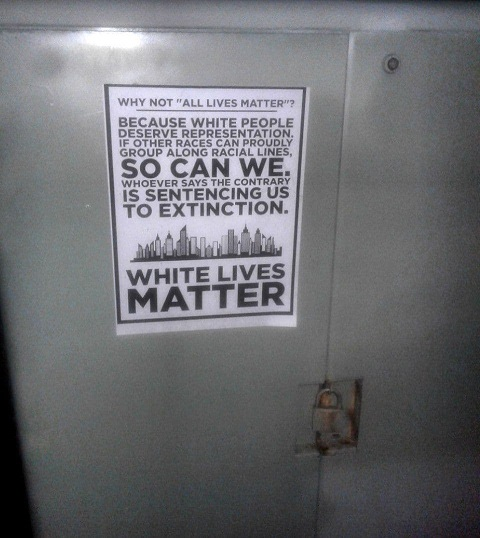
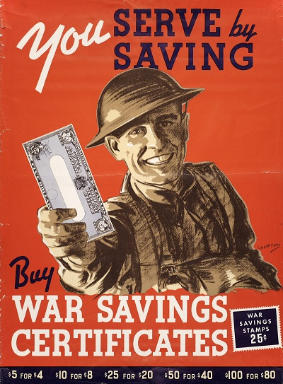
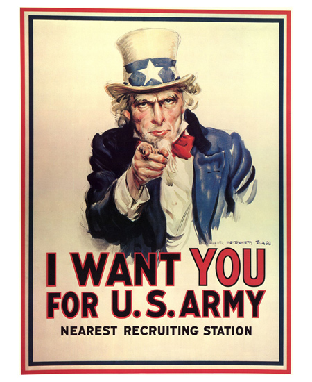
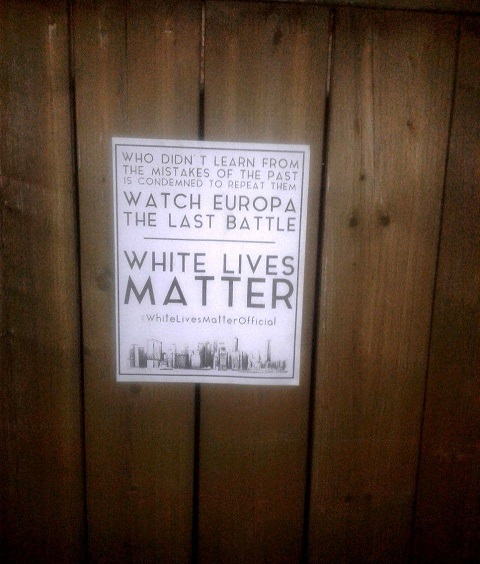
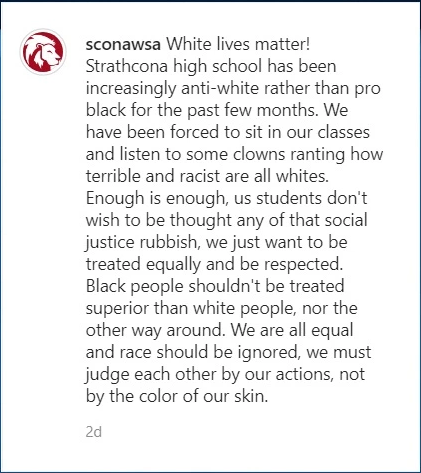

White Lives Matter Weirdos
June 22nd, 2021
I've been following some accounts on Telegram from Canada. I have to say, mostly I find their content fairly decent. It's helped me stay in the loop on the mundanity of day to day politics. However, I have recently been introduced to some extremely worrying stuff. Let me show you.

Okay. So the thought process behind this is apparently that some random White Person is going to stumble upon this in the middle of a Tuesday morning, and just... I don't know, then the revolution happens? This is basically retarded. It's even more retarded because the gist of it "White People should organize," is fine, but there are no links to some White Organization at all. So, it's some cringey poster saying that White People should organize along racial lines, that offers no actual solutions to people.
It also uses "White Lives Matter," which is enragingly bad propaganda. BLM is an astroturfed organization pushed by the (((Privileged Class))). Calling your movement "White Lives Matter," legitimizes BLM, and yet is completely impotent and accomplishes nothing. I am just absolutely enraged by this.
This garbage manages to check off every single box on the "how to be negative propaganda box."
1) It's cringey. Literally if they put up a sign that said "Niggers, am I right fellas?" That would be better, because then it would at least not evoke visceral reactions in people. I mean it wouldn't be productive, but it'd at least be kind of funny.
2) It talks tough (sentencing us to extinction) while doing absolutely fuckall. Don't ever talk tough without doing something.
3) It accuses and antagonizes the reader. This poster basically says "you're shitty," not "here's some anti-White propaganda, I'm on your side." In the era of Critical Race Theory and "Whiteness Studies," and massive racial discrimination against White People, this propaganda... also attacks White People.
4) It doesn't offer anything for the viewer. This literally just lectures the presumably White Viewer that they have bad views or something, talks tough, does nothing.
5) This doesn't tell the viewer what they can do. WTF is anybody supposed to do with this poster, just enjoy it? This is what makes me think it might actually not be a gayop, because it's just too fucking retarded.
Well done propaganda
Do you see this poster? Do you see that while it's trying to get the goyim to sacrifice for International Finance Capital, objectively the propaganda is done decently. Let's compare this to the previous poster.
1) It's not cringey. Happy well drawn guy. Good lettering, nothing too offputting.
2) It's part of a political movement that actually has some power, yet portrays itself as needing the audiences help.
3) It flatters the viewer, and attempts to get on the viewers side. "Hey, you like America, look at this happy soldier who looks just like you. He needs your help against the enemies of International Finance Capital." Okay they don't say that last part, they say "something something way of life."
4) The implication of the lowly soldier, is that he is sacrificing and struggling for the viewer of this poster. I mean he's not, he's being sacrificed for Globo Homo Schlomo, but that's the implication.
5) "Buy some fucking bonds," is essentially written all over the fucking poster, and that's the specific tangible action the poster wants out of the viewer. It's not unclear at all.
Let's look at another propaganda poster.

I'm not going to go through the whole list of five, but this can be summed up as "you're awesome, I need you, sign up for the military." Now let's compare this good propaganda with another shit tier propaganda poster.
Here's another
I mean this one isn't quite as terrible, since at least they give the @ of their telegram channel, making the entire thing slightly less bafflingly retarded. It's also less cringey, albeit, still very cringey.
This same shit came up about two months ago, and everyone called it out for being a fed op from the beginning. Here's what I said back then.
TDC_ARTICLE_START
Honestly I'm not a huge fan of this kind of thing. Forming political parties is great, and easily worth the risk. Doing specific protests for specific goals that are massively popular is also nice.
This is just... not appealing to me. It strikes me as cargo culting Black Lives Matters as some organic thing. It's not, it gets 10 billion dollars of funding because it is a tool of the privileged right from the beginning. Us doing some "White Lives Matter" rally with zero institutional support is asking to get state repression for not much in return.
Actually, I need to expand upon my point here a little bit.
There are 100% popular rallies we can hold. For example, putting up signs pointing out that David "Weapons of Mass Destruction" Frum is not being sent to jail for lying our soldiers to their deaths is an okay thing to rally against. Rallying against massive ADL driven Tech Censorship is popular. Rallying against the abuse of orphaned 2 year old children by Wallace Wong and friends.
On a racial sense, rallying against anti-White hate speech is way more effective. Put up signs where that Yusra Khogali BLM cunt says that "White People are Subhuman Defects that should be wiped out." Rally against racial discrimination against White People in x location.
These are popular, many of these are massively popular. I'm not going into downtown Vancouver to be one of 5 people holding up gay WLM signs, just so that the police can arrest me after I defend myself from Antifa. This is fucking retarded. This is so retarded that it's actually enraging to me.
TDC_ARTICLE_STOP
The entire "White Lives Matter," shit is either some of the most anti-social weirdos ever, or a complete gayop from the start. Possibly a mix of both. We are literally in the middle of average everyday people encountering "Critical Race Theory," a clear and obvious racial attack on White People, that's so bad and undeniably anti-White that even randos are calling it "anti-White." That's so bad that parents are going to school boards and demanding that they stop teaching their children this shit all across the country.
Just a couple months ago we had White Children in Edmonton having the police sic'd on them by saying that they were being attacked for being White.
Now this is pretty good propaganda.
And these faggots want to put up really hideous cringey posters about "you are being BRED TO EXTINCTION White Man!"
I refuse to believe that there are people out there that are this retarded. I mean, sure, there are a few, but even retards would know to just stick with TRS stuff, or other stuff that's edgy but not this retarded. This propaganda is so fucking bad that I refuse to believe it's not malicious.
UPDATE: I mean, I'm willing to give many of the people involved in this a pass, since I think lots of people are looking for a way to express themselves, and not getting it. I just think the leadership here is either incompetent or malicious.